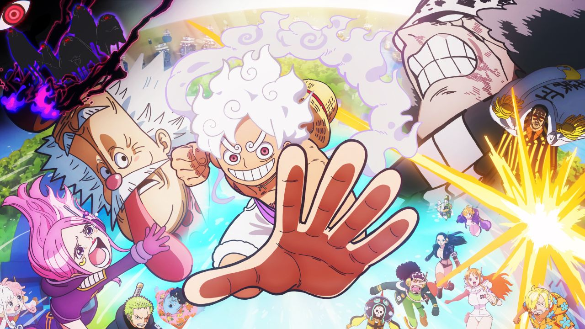
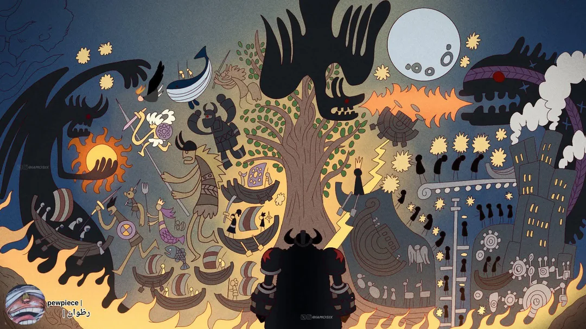

O Arco Egghead (ou Arco da Ilha do Futuro) é o 32º arco de One Piece, marcando o início da Saga Final. Os Chapéus de Palha chegam à ilha futurista do Dr. Vegapunk, onde a tripulação se envolve em uma conspiração do Governo Mundial e do CP0 para assassinar o cientista, resultando em um grande cerco da Marinha.
No Arco de Elbaf, um misterioso mural é descoberto nas terras dos gigantes, revelando registros históricos que o Governo Mundial tentou apagar. As inscrições apontam para eventos ocorridos durante o Século Vazio, conectando os gigantes diretamente à história proibida do mundo e ao legado do Rei dos Piratas, Joy Boy.


Loki é o príncipe aprisionado de Elbaf, filho do rei Harald. Encadeado por décadas após uma rebelião contra as tradições dos gigantes, ele carrega um passado ligado à Akuma no Mi do tipo Tori Tori. Sua libertação por Luffy promete sacudir o equilíbrio de poder em Elbaf e revelar segredos enterrados há séculos.
Imu-sama é o governante secreto do Governo Mundial, um ser de poder absoluto que habita o trono vazio de Mary Geoise. Sua aparição marca um dos momentos mais impactantes da Saga Final, revelando uma figura imortal com ligação direta ao Século Vazio e uma obsessão por apagar qualquer ameaça à ordem mundial, incluindo Luffy e o legado de Joy Boy.